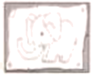
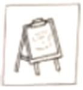
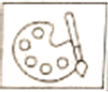

2023年北京中考英语 第13—20题 解析
13. A. restaurantB. streetC. schoolD. office
14. A. agreedB. finishedC. waitedD. left
15. A. trustB. loveC. patienceD. confidence
16. A. hopeB. adviceC. moneyD. service
17. A. nervouslyB. carefullyC. coldlyD. kindly
18. A. disappointB. hurtC. troubleD. surprise
19. A. nicerB. coolerC. closerD. fairer
20. A. saidB. workedC. readD. ended
【答案】13. A 14. C 15. B 16. D 17. C 18. D 19. A 20. B
【解析】
【导语】本文是一篇记叙文。主要讲述了作者在快餐店吃饭时，因为迟迟没有人点单而生气，但是想到了妈妈的话他决定对别人友善一些。他认为我们每个人都是一样的，有烦恼会生气 ，会累也会受伤，因此我们需要更耐心地对待他人。
【13题详解】
句意：我环顾了几乎空荡的餐厅，但收银员不在视线内。
restaurant餐厅；street街道；school学校；office办公室。根据上文“I hardly had enough time to eat a sandwich and rush back to work.”并结合空后“but the cashier was nowhere in sight”可推断出作者需要出来吃点东西，然后回去工作，应是环顾餐厅。故选A。
【14题详解】
句意：我在等待中变得生气。
agreed同意；finished完成；waited等待；left留下。根据后文“I’d been standing there for at least three minutes! ”可知此处指的是在等待中变得生气。故选C。
【15题详解】
句意：如果一个人是讨厌的，那么爱不见了。
trust相信；love爱；patience耐心；confidence自信心。根据前文“If some one is unkind, then kindness is missing.”可知unkind和kindness为对应关系，结合空前“If someone is hateful”与hateful对应的词为love，故选B。
【16题详解】
句意：不见的是服务。
hope希望；advice建议；money钱；service 服务。根据空后“Maybe I should just jump behind the counter and take my own order. ”可推知此处指的是服务。故选D。
【17题详解】
句意：“我可以帮你吗?”她仍然冷漠地问。
nervously紧张地；carefully仔细地；coldly冷漠地；kindly友善地。根据第二段最后一句“She looked at me coldly with sad, dark eyes.”可知此处是coldly的同词复现，对应空格前的“still”，意思是她仍然冷漠地问。故选C。
【18题详解】
句意：我的问题似乎使她惊讶。
disappoint使失望；hurt使受伤；trouble使烦恼；surprise使惊讶。根据后文“She eyed me for a second before answering.”可推知作者的问题似乎使她惊讶。故选D。
【19题详解】
句意：我们需要对彼此更友善。
nicer更友善的；closer更近的；cooler更冷漠的；fairer更公正的。根据前文“We’re all the same, really. We have problems and angers, we get tired and we hurt.”可推知需要对彼此更友善。故选A。
【20题详解】
句意：“成为缺失的东西。”它凑效了。
said说；worked工作，奏效；read阅读；ended结束。根据“The woman was watching me, a big smile on her face.”可推知作者以善良应对冷漠，最终奏效了。故选B。
三、阅读理解 (每题2分, 共26分)
(一) 阅读下列课程介绍, 请根据人物喜好和需求匹配最适合的课程, 并将课程所对应的A、B、C、D选项填在相应位置上。选项中有一项为多余选项。
A
Short Art Courses
A. Wild Art This course is about drawing and painting. You’ll use your new skills to make a wall poster of animals. And we’ve got lots of picture books to give you ideas.  | B. Art Matters This course teaches you different drawing skills. We’ll get you to draw the latest styles of clothes. If you like designing clothes and want to study it at college, join us!  |
C. Creative Art This course is about making bags to keep your sports clothes in. We provide lots of materials. And you’ll visit art museums to get some creative ideas. 
| D. Art Magic This course is about telling good stories in pictures. There’ll be cartoon films to watch and instruction in how to draw your favorite characters.  |